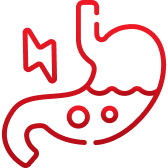
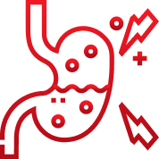
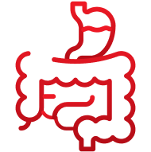

Есть ли место антацидам?
в терапии кислотозависимых заболеванийТерапевтические стратегии при кислотозависимых заболеваниях
Кислотозависимые заболевания (КЗЗ) представляют собой обширную группу патологий желудочно-кишечного тракта, связанных с повышенной кислотностью желудочного сока1.
К числу наиболее распространенных относятся:
- Гастроэзофагеальная рефлюксная болезнь (ГЭРБ) 
-
Функциональная
диспепсия  - Язвенная болезнь желудка и двенадцатиперстной кишки 
- Гастропатии (связанные с приемом НПВП или со стрессом)
Основной терапевтический подход при КЗЗ — снижение агрессивного воздействия соляной кислоты на слизистую оболочку ЖКТ.
Это достигается путем назначения:
- Ингибиторов протонной помпы (ИПП) — основной группы антисекреторных препаратов
- Антацидов — быстродействующих средств для купирования симптомов
- Прокинетиков — вспомогательных препаратов, нормализующих моторику ЖКТ
- 01 Несмотря на высокую эффективность ИПП, у многих пациентов наблюдаются кислотные прорывы и/или формирование «кислотных карманов»2
- 02 ИПП обладают достаточно длительным латентным периодом, а значит они не подходят для терапии «по требованию»2
В связи с этим антациды остаются востребованными препаратами при симптоматическом лечении кислотозависимых заболеваний2